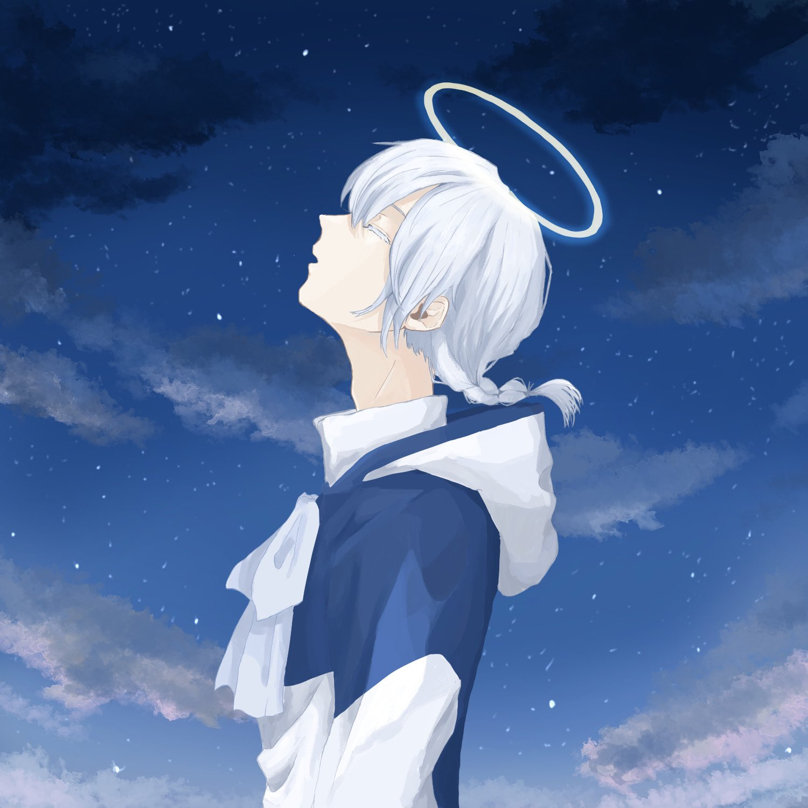

Illustration
コメット SNSアイコン
彗星の化身であるオリジナルキャラクター「コメット」を描いた、活動用のSNSアイコンイラストです。

Overview
SNSアイコンや、ポートフォリオサイト内のビジュアルとして使用しているイラストです。 彗星をモチーフにしたオリジナルキャラクター「コメット」を描き、青や白を基調に、透明感のある雰囲気が伝わるように制作しました。
Suisei Worksの世界観に合わせて、夜空・水・透明感を感じられるような色味を意識しています。 アイコンとして小さく表示されたときにも印象が残るよう、顔まわりの見やすさや配色のまとまりを大切にしました。
Concept
「透明感」「静けさ」「夜空を流れる光」をテーマに制作した、自主制作のキャラクターアイコンです。 彗星や氷を連想させる淡い青系の色味を中心にまとめ、コメットらしい静かな輝きが伝わるように意識しました。
普段は宇宙を旅しているキャラクターが、人間に近い姿へ変化した状態をイメージしています。 表情や髪の流れ、色の重なりを調整し、やわらかく落ち着いた印象になるよう制作しました。
Character
コメットは、彗星の化身として宇宙を旅しているオリジナルキャラクターです。 明るいものに惹かれる性質があり、光そのものだけでなく、心が温かい人にも惹かれるという設定を持っています。
今回のアイコンでは、細かな設定をすべて見せるのではなく、キャラクターの持つ透明感や静かな雰囲気、やさしさが伝わるように表情や色味で表現しました。
用途
SNSのプロフィールアイコンや、ポートフォリオサイト内の活動用ビジュアルとして使用するために制作しました。 制作活動の雰囲気が伝わるように、サイト名や世界観と合わせたデザインにしています。
制作情報
- 制作区分：自主制作
- 制作期間：約1週間（作業時間：約20〜30時間）
- 担当範囲：キャラクターイラスト制作 / 構図作成 / 配色調整 / SNSアイコン用の仕上げ
- 使用ソフト：CLIP STUDIO PAINT
- 制作形式：SNSアイコン用イラスト
制作ポイント
小さく表示されたときにも印象が残るように、顔まわりの見やすさと色のまとまりを意識しました。 目元や表情が埋もれないように、髪色・肌色・背景色のバランスを調整しています。
また、サイト全体の世界観に合わせて、夜空や水を連想するような透明感のある雰囲気に寄せました。 青や白を中心にまとめることで、落ち着きのある印象とアイコンとしての使いやすさを両立させています。